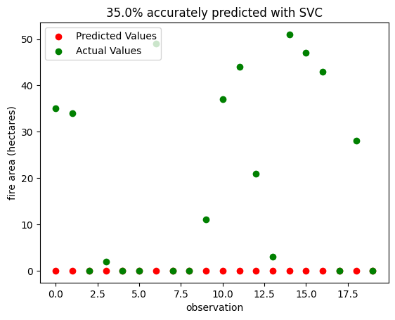

Source code: https://github.com/ebwieman/wildfire-risk-tool/blob/main/main.ipynb
Mapping tool: https://github.com/ebwieman/wildfire-risk-tool/blob/main/wildfire_risk_mapping_tool.ipynb
Abstract
Wildfires have increased in recent years as a result of climate change, posing a threat to humans and the environment. Understanding the conditions that lead to wildfire and which areas are most at risk is important for developing mitigation strategies and allocating resources. In this project, we utilize machine learning algorithms to predict both wildfire occurrence and area of wildfires. To predict wildfire occurrence, we trained several machine learning models on a dataset containing meteorological information about potential wildfires in Algeria. An accuracy of 100% was achieved using a logistic regression model trained on all features. To predict wildfire area, models were trained on a dataset of wildfire events from Montesinho National Park, Portugal. The area prediction task was much more difficult than the classification task and required additional label transformation to achieve higher accuracies. The highest area prediction accuracy was achieved with a logistic regression model trained on all features and using labels transformed with the scikit-learn lab encoder. Lastly, a model trained on the Algerian dataset was used to predict and map wildfire risk in the United States. The trained model was more simplistic than other models due to the lack of US meteorological data available, but visual comparison to existing fire prediction tools such as the USGS Fire Danger Map Tool shows that the model was somewhat able to predict fire risk in the United States. One shortcoming of this work is that all datasets used to train our models were small and regionally specific, making it difficult to create generalizable tools for use on larger scales or different regions. Developing larger and more regionally dispersed wildfire datasets will aid in future creation of more robust fire prediction tools.
Introduction
Climate change has increased the likelihood of a variety of extreme weather events, including wildfires. These extreme events pose definite risks to both human and ecological communities. At the same time, machine learning is emerging as an important predictive tool in natural disaster prevention; numerous studies have already used machine learning to classify risk of natural hazards. For example, Youssef et al. used machine learning models to predict an area’s susceptibility to landslides, floods, and erosion in Saudi Arabia (Youssef et al. 2023). This study experimented with a few different models, ultimately settling on Random Forest. In Choubin et al.’s study of avalanches in mountainous regions, Support Vector Machine (SVM) and Multivariate Discriminant Analysis were found to be the best models in assessing avalanche risk based on meteorological and locational data (Choubin et al. 2019).
Prior studies have also focused specifically on wildfire prediction. A 2023 paper even developed a new model to better predict burned areas in Africa and South America (Li et al. 2023). In addition, the dataset used in our project to predict Portuguese fires was originally the topic of a 2007 paper focusing on training models on readily available meteorological data to predict the area of wildfires (Cortez and Morais 2007). This study also experimented with different predictive features and models, finding SVM and random forest to be the best predictors (Cortez and Morais 2007).
In this project, we build on these prior studies, using many similar techniques and models. We use two datasets to predict wildfire likelihood and wildfire area given meteorological data. Our first dataset, the Algerian Forest Fires Dataset, contains fire and non-fire events with 11 attributes that describe weather characteristics at the time of that event. Our second dataset, the Forest Fires Dataset, contains data from Montesinho National Park, Portugal. This dataset contains many of the same weather characteristics as the Algerian dataset, but contains only fire events, and also includes the areas of these events. Rather than using this dataset to predict whether a fire occurred in a given area, we used it to predict the size a fire is likely to reach given certain meteorological conditions.
Over the course of this project, we followed in the footsteps of prior studies, experimenting with different models to predict risk. We implemented several existing machine learning models such as Random Forest and Logistic Regression, ultimately choosing the models and sets of features that yielded the highest accuracy score. We trained and validated models on the Algerian dataset to predict whether or not a forest fire will occur given certain meteorological conditions and also trained/validated models on the Portugal dataset to predict forest fire area given many of the same features.
Although we trained our models with localized data, we also assessed the extent to which we could apply our models across datasets and geographies. Similarly to the multi-hazard susceptibility map produced by Youssef et al., we created a fire susceptibility map of fire risk using our models and county-level temperature and precipitation data for the entire United States (Youssef et al. 2023). While we cannot assess the accuracy of this map directly, we can compare it to existing US wildfire prediction tools to at least visually assess our accuracy.
Finally, we build on existing research to assess the ethics of using machine learning models in predicting risk of natural hazards. As Wagenaar et al. caution in their 2020 study of how machine learning will change flood risk and impact assessment, “applicability, bias and ethics must be considered carefully to avoid misuse” of machine learning algorithms (Wagenaar et al. 2020).
As extreme weather events become more prevalent with climate change, we must learn how to best predict and manage these events. The methods explored detail our own attempt to do so.
Values Statement
Being able to accurately predict the risks of wildfires offers numerous benefits for various stakeholders. Predictive models like ours have the potential to revolutionize wildfire management and mitigation strategies, leading to better preparedness, timely response, and ultimately, the protection of lives and property. Thus, we wanted to build upon prior studies and further the ability to accurately predict wildfires.
The main beneficiaries of this project are the wildfire departments and emergency responders. These agencies can gain valuable insights into the probability and severity of wildfire occurrences in specific areas though our project. These predictions allow for better allocation of resources and more effective mitigation strategies, reducing the overall damage and saving tons of valuable resources. If we can assess areas with high-risk for wildfires ahead of time, they could be better equipped and protected.
Insurance companies can also leverage our predictive models to assess risks associated with wildfires. By integrating these algorithms into their underwriting processes, insurers can accurately evaluate the potential impact of wildfires on properties, allowing for more precise risk assessment. Moreover, the models can aid in post–fire analysis, enabling insurance companies to provide timely assistance to policyholders living in at-risk areas.
Government agencies responsible for land and forest management are also another one of our potential users. Policymakers can make more informed decisions regarding land use, forest management, and allocation of resources for fire prevention efforts. Ultimately, this can lead to more proactive measures such as improved firebreak construction and targeted vegetation management.
Another group that may not directly utilize our predictive wildfire models, but still stands to benefit is the general population. Information that trickles down from fire management authorities can help individuals living in fire-prone areas make informed decisions and take the necessary precautions. People are able to take property protection measures and implement evacuation plans they deem necessary. Overall, the predictions from these models can increase safety measures while minimizing property damage within the predicted at-risk areas.
While the use of machine learning models to predict wildfire risks can be highly beneficial, there are potential downsides with their implementation that should be considered. Our models rely heavily on well documented weather and geographical data. Data collection takes time and money, which could potentially be a barrier to using our models. Remote areas without government or research funding most likely will not be able to produce the data needed to benefit from our models. Moreover, communities lacking internet access, computing devices, or technological literacy are unable to take advantage of our models. This can disproportionately affect rural areas and low-income communities, further exacerbating existing inequalities.
Additionally, we recognize that our models are trained and tested on data that is in English. This language barrier can hinder individuals who don’t have the proficiency in the language, limiting their ability to use these predictive models. Additionally, cultural differences and contextual nuances might not be well captured in our models, leading to potential misunderstandings and biases. Thus, we want to be mindful of the potential barriers and hope to address these shortcomings in our future work. Failing to address these disparities could perpetuate social inequalities in wildfire management.
Upon reflecting these potential harms and benefits, we still believe this project will improve wildfire management and be a crucial resource to communities in fire-prone areas. Additionally, this project furthers our understanding of factors contributing to wildfires. With this information, we can accurately predict the likelihood of wildfires in a given region, enabling better fire management, mitigation, and evacuation. Wildfire predictions can help protect the land, wildlife, and local communities. Still, efforts should be made to actively involve marginalized groups in wildfire preparedness and response initiatives.
Materials and Methods
The Datasets
In this project, we utilized various machine learning models from scikit-learn to better understand wildfire occurrences. Specifically, we trained and tested on two datasets to predict wildfire likelihood and wildfire area given the meteorological and geographical features. These datasets were taken from the University of California Irvine Machine Learning Repository. Our first dataset, the Algerian Forest Fires Dataset, contains fire and non-fire occurrences with 11 attributes describing weather characteristics at the time the event occurred. Our second dataset, the Forest Fires Data, has data from Montesinho National Park, Portugal. This dataset contains many of the same weather attributes as the Algerian one. However, rather than using this dataset to predict whether a fire occurred in a given area, it can be used to predict the size of the fire given certain meteorological and geographical conditions.
The Algerian dataset has 224 instances that regrouped data from two regions in Algeria, namely the Bejaia region located in the northeast of Algeria and the Sidi Bel-abbes region in the northwest of Algeria. There are 122 instances for each of the two regions. This data was collected from June 2012 to September 2012. As stated, the dataset contains fire and non-fire events with 13 attributes that describe weather conditions. The 13 features are: day, month, year, temperature in Celsius, relative humidity, wind speed, rain, fine fuel moisture code, duff moisture code, drought code, initial speed index, build up index, and fire weather index. Our target label is “fire”, with a label of 1.0 meaning that a fire has occurred and 0.0 being no fire.
The data collected in the Portuguese dataset was taken from Montesino park in the northeast region of Portugal. The 12 features in this dataset are similar to the ones in the Algerian dataset. These features include: x-axis spatial coordinate, y-axis spatial coordinate, month, day, fine fuel moisture code, duff moisture code, drought code, initial speed index, temperature in Celsius, relative humidity, wind, and rain. The target label is “fire area”, which determines the total burned area of a fire given the meteorological and geographical conditions.
We used RidgeCV from scikit-learn to pull out five important features in each dataset that we later trained on. RidgeCV is a cross validation method in ridge regression. The higher absolute coefficient, the more important that feature is. After applying RidgeCV to the Portuguese dataset, we yielded the five most important features: x-axis spatial coordinate, y-axis spatial coordinate, initial speed index, temperature, and wind. The five most important features for the Algerian dataset are: relative humidity, rain, fine fuel moisture code, initial speed index, and fire weather index.
Modeling
Both datasets were trained on various algorithms taken from scikit-learn and each model was analyzed based on their accuracy score.
The Algerian training data was trained on four different algorithms: decision tree, logistic regression, random forest, and stochastic gradient descent. For each of the algorithms, we trained the Algerian training set with its complete set of 13 features and also with the 5 features selected via our feature selection process. Additionally, we used cross validation to evaluate the models’ performance at different settings and to avoid overfitting. All five algorithms performed relatively well on the training data, with the accuracy score ranging from 0.552 to 0.990. Training the complete set of features on the stochastic gradient descent classifier yielded the lowest score of 0.552. Alternatively, training on the logistic regression classifier with the complete set of features gave us the highest accuracy of 0.990. Therefore, we went ahead and used the logistic regression model to test our Algerian data on.
As for the Portuguese dataset, we started by training it on the linear regression model and support vector machine for regression, but got very low accuracy scores of 0.048 and -0.026, respectively. It was much harder to train on this dataset because the labels were non-binary and many were skewed towards 0’s. We then performed a log-transform on our labels, hoping to improve the accuracy. However, this did not make much of a difference. The highest score we got after log-transforming our labels and training on a linear regression model is -0.020. After this, we went ahead and transformed our labels through three different methods. First, we used the lab encoder in the scikit-learn preprocessing package to encode the target labels with values between 0 and n number of classes - 1. Second, we divided the labels into 50 different ranges. Last, we transformed the labels into binary labels, making the areas larger than 0.0 as “non 0’s” and keeping labels of 0.0 as “0.0”. While we recognize that this method is not ideal, it was very difficult training the Portuguese dataset since it is a very small dataset and most of the target labels are skewed towards 0.0.
In the end, we trained our dataset on four different models: linear regression, logistic regression, support vector machine for classification, and support vector machine for regression. Each model was trained on different combinations of features and transformed target labels. We trained the model on its complete set of features, on the features selected via our feature selection process, and on the features highlighted in the research paper written by (Cortez and Morais 2007). In their paper, they also experienced difficulty training this Portuguese dataset. Ultimately, transforming our labels via the lab encoder got us a training score of 0.513 when trained on a logistic regression model using the complete set of features. Unsurprisingly, changing our y into binary labels and into ranges got us a perfect training accuracy of 1.0. Thus, we decided to test our Portuguese data on the logistic regression model with the transformed target labels.
US Meteorological Data and Mapping Tool
County level precipitation and temperature data was downloaded from the NOAA NClimGrid dataset (NoaaData?). Specific months of interest were selected and data was downloaded for that month as two csvs, one containing precipitation data and one containing temperature data. The precipitation data contained total precipitation in mm for each day of the month for each US county, while the temperature data contained maximum temperature in Celsius for each day. Significant time was spent searching for additional meteorological data, specifically wind speed and humidity, but these efforts were ultimately unsuccessful. The temperature and precipitation datasets were uploaded to GitHub and then loaded into the Mapping Tool Jupyter notebook. Substantial data cleaning was performed to prepare the US data for prediction. Data cleaning tasks included renaming columns after the datasets were read in and resolving discrepancies in the state and county codes so that data frames could be merged by county. The precipitation and temperature datasets were read in, converted to pandas dataframes, and merged. From this dataframe, data was extracted for a specified day and county-level wildfire predictions were generated for that day. Predictions were generated using a new Random Forest model that was trained on the Algeria dataset using only Temperature and Rain as features, as these were the only features we had access to for US data. These predictions were then joined with a dataframe containing geological coordinates for each county and then the predictions were mapped. The final algorithm used for mapping allows the user to put in a date and state and then produces a map of county-level fire risk for that state on the specified day. If there is no data for the specified day, the algorithm returns a message apologizing for the lack of data. If no state is specified, the algorithm returns a map of the entire continental US. While the maps could not be rigorously assessed for accuracy, visual comparison to the USGS Fire Danger Map Tool was used to discuss the accuracy of our Algerian model when applied to US data (UsgsData?).
Results
We came close to achieving all of our goals for this project. Our greatest success was our modeling of the Algerian dataset. We achieved high training accuracy with several models, including > 95% training accuracy for a Random Forest Classifier, Logistic Regression, and Decision Tree Classifier, as well as 100% testing accuracy with a Logistic Regression model. It’s difficult to say how applicable this model is outside of the region of Algeria the data are from. The random forest classifier that we trained on the Algerian model for our mapping tool got many things right – it predicts more widespread fire in the summer months, for example, than in the winter – but we trained it on many fewer features than are in the full Algerian dataset.
This is certainly one of the shortcomings of our project. The lack of weather data available for the United States means that we can’t fully say how well our model would perform on data from a region other than Algeria. However, there are positive trends, and were more weather observations available, it seems likely that our model would have some applicability.
Despite the fact that we did not get to realize the full abilities of our model, creating an interactive map is nonetheless a highlight of the project. It shows that our project has the ability to be broadly applicable, and underscores the power of Machine Learning as a tool for natural hazard prediction and prevention. We explored the ethical dimensions of this application of Machine Learning in a short essay, and while there are certainly ethical considerations that must be made when training models to predict natural hazards, this project shows that there is also a great deal of opportunity to use Machine Learning to predict and manage risks from natural hazards.
While we cannot assess the accuracy of our US prediction tool directly, visual comparison to existing mapping tools such as the USGS Fire Danger Map Tool yields some insights. If we compare the two tools’ predictions for March 2, 2023, we see that our tool vastly overpredicts fire risk in the US (Figure 1). Our tool correctly predicts fire in the locations that the USGS identifies the most high risk, specifically Southwestern Texas and Arizona, but we also predict risk of fire in large swaths of the Midwest and Florida that the USGS tool does not deem particularly high risk.
Next we look at a potentially more interesting case in July 2020, the peak of summer, when we would expect more areas of the country to be susceptible to wildfires. Here the USGS predicts risk of fire in much of the Southwestern United States, and we see that our model does as well. However, we once again see overprediction by our model, specifically in the Midwest. One possible contributing factor is that the USGS model differentiates between agricultural land and does not predict fire risk in these areas. Our model seems to predict fire risk in many of the areas deemed agricultural by the USGS model, so differentiating between land cover classes could be useful for future development of this tool. Additionally, our model predicts on the county scale, while the USGS mapping tool appears to have much better resolution, allowing it to make more refined predictions. One other exciting observation in the July maps is that while our model tends to make generally uniform predictions across states, we do see some agreement between the two tools in identifying pockets of low fire risk within the Southwestern United States. The fact that our mapping tool tends to make relatively uniform predictions across states suggests that the model could just be learning general weather patterns rather than actually learning fire risk. Training on additional features would likely help address this problem, but this is impossible at the moment due to the lack of aggregated US weather data available.

The final area of our project to discuss is the models we trained for the Portuguese dataset. Replicating the process of the original academic paper didn’t yield results of the same accuracy as those obtained by the study (Cortez and Morais 2007). Log-transforming the data was a complex process that was perhaps more involved than we had anticipated. However, we still managed to achieve about 50% accuracy with both Logistic Regression and Support Vector Machine models, and 100% accuracy when we transformed to binary labels and categorical labels. Figure 3, shown below, shows the results the model achieved on 20 features from the test set:

Figure 4 shows the same observations, predicted using the SVC model. It also gets 35% of its predictions correct, but unlike the LR model, it only ever underestimates the area of fires, while the LR model overestimates several. This suggests that the SVC model is slightly more conservative, and may fail to predict the largest fires.

These mixed results for the Portuguese data, along with our high testing accuracy for the Algeria dataset, shows that predicting whether or not a fire occurred is a much more straightforward task than predicting the area of the fire. There is certainly room to grow in our modeling of this dataset; perhaps trying different models or features would yield different results. We recognize that transforming the target labels into categorical and binary labels isn’t ideal; however, it was too difficult otherwise. This was because the Portuguese dataset is a very small dataset with the majority of the target labels skewed towards 0.0. Thus, this problem was turned into a classifying problem instead of producing an accurate predictor model. Nonetheless, our process and results show that it is possible to build a model trained on readily-available weather observations that predicts the area of fires with a reasonable degree of accuracy.
Concluding Discussion
Overall, our project was successful in a number of ways, and opens the door for future research and experimentation. Our analysis of wildfire risk provided us with an opportunity to practice data science. We successfully found regional data sets, cleaned them, and prepared them for machine learning analyses. Using a Ridge model, we successfully selected features to use for making predictions in each dataset, and through experimenting with a variety of different machine learning models, we selected two that reached reasonably high accuracy. Through examining United States county-level data, we were able to apply our models across scales. Finally, we visualized our results well, and effectively discussed their ethical implications.
As a group, we met and even surpassed our original project goals. We have a code repository that details our data preparation and cleaning, model training and prediction, and evaluation, notebooks with in exploratory data analysis and testing of our models, a short essay about the implications of using machine learning and automated tools for ecological forecasting (both risks and benefits) and a map of wildfire risk in the United States constructed using our models and US meteorological data. We had wanted to use machine learning to help with natural hazard risk detection and prevention, and our final product provides detailed and thorough documentation of our attempt to do so.
Because our project built on the work of scholars such as Cortez and Morias, we have the ability to compare our results to past work. While Cortez and Morias’ 2007 study that explored the Portugal data we used in our project identified SVM to be the best machine learning model for fire area prediction, we found SVC and Logistic Regression to be equally effective on the Portugal data set (Cortez and Morais 2007). Our work weaves in well with prior studies, allowing us to make predictions about natural risk by choosing and applying machine learning models. Overall, through experimenting with different models, we ultimately were able to predict wildfires and wildfire area more accurately than our base rates, and experimented with applying these models across scales. With more time, data, or computational resources, we could improve our methods and findings. Spending more time finding and downloading more data for the United States (such as wind speed and humidity, prehaps) would likely improve our map and our model and allow us to better apply the model across space. While we trained our machine learning models on regionally-specific data, we applied thier predictions to new and differently-scaled geographies. When applying models across space, it is important to do so in collaboration those people who may be affected by the results of predictive machine learning tools (Wagenaar et al. 2020). Overall, when we pay attention to bias and applicabiltiy, wildfire and natural disaster models have numerous applications, and even the potential to save lives. As the likelihood and intensity of extreme weather events continues increasing in the face of climate change, we should incorporate and continue building on the anaysis presented here to acheive even better methodologies to predict and prepare for these events.
Group Contributions Statement
Madeleine: Near the beginning of the project, Wright and I worked on preparing the data from the Algeria and Portugal data sets to eventually split into testing and training data. I then worked on selecting features important for fire/fire area prediction using RidgeCV. We then worked on visualizing the relationships between these selected features and fire likelihood/area. Later in the project, I worked with Eliza on our map. Specifically, I worked on rendering the map to show all the counties in the US, and and helped prepare to join the counties on the map to the county-level temperature and precipitation data. I also worked on the map’s design. Finally, I tried to find additional weather data for the US (such as wind speed), but was largely unsuccessful.
Wright: I worked with Madeleine at the beginning of the project doing some data preparation. Specifically, I worked on formatting the Algeria data set so that it could be treated as binary fire/no fire data. I then worked on data vizualizations, making graphs of the relationships between different features and fire occurrence/scale. I wasn’t directly involved with the modeling, but after the models were trained I ran them on some test observations and vizualized their performance. Finally, I worked on a short research essay about the ethics of using Machine Learning for natural hazard prediction, prevention, and adaptation.
Eliza: I helped with initial downloading and importing of the Portugal and Algeria datasets and splitting them into train and test sets. I initially worked on training models on the Portugal dataset (with little success) and did some research to figure out how the authors of the paper that the dataset originated from achieved higher accuracies. I did some of the initial experimentation with log-transforming our y values, but then I pivoted to working on the mapping tool and Nhi took this part of the project over. I definitely spent most of my time and effort working on the mapping tool for this project with Madeleine. I did extensive research on US county-level meteorological data and identified and downloaded the nClimGrid dataset that we ended up using for our US predictions. I did a lot of the data cleaning of these datasets prior to generating our maps, which Madeleine took the lead on, and I helped streamline the map-making process after creating our first map by converting a lot of our code into reusable functions. For the blog post, I took lead on the Materials and Methods section with Nhi, specifically focusing on the mapping tool methods, and the Abstract.
Nhi: Towards the beginning of the project, I helped with cleaning up our datasets and making sure they are ready to be trained on. For the majority of the project, I did a lot of the training and testing for both of the Portuguese and Algerian datasets. The Algerian dataset was a lot easier to train on, and I was able to obtain a very good accuracy score early on. I trained the Algeria dataset on different models and with different combinations of features to see which would yield the highest accuracy. I did a lot of cross validation and fine tuning to make sure the models weren’t overfitting. Then I tested the highest scoring model on the Algerian testing dataset. Eliza started with training the Portuguese dataset, but did not get very far since this was a much harder dataset to train on. Thus, I took over the modeling for this as well. I started by training the dataset on other models since Eliza had only trained on two models to start. I wasn’t very successful with the other models either, so I explored different ways to transform the target labels since the majority of the labels were skewed towards 0’s. I did a lot of digging around on scikit-learn and while not ideal, I transformed the labels via lab encoder, into binary labels, and into different ranges of the target labels. I then trained different combinations of the features and transformed target labels on different models. I analyzed these models to see how they performed against the testing dataset. Overall, I dissected a lot of different variations of the features and target labels. Additionally, I also combed through our code and cleaned them up. I also added a lot of the descriptors before and after each code section to explain our processes. For the blog post, I wrote the Values Statement, the dataset and modeling in the Materials and Methods section, and added a bit to the Results.
Ethics of ML as a tool for Natural Hazard Prediction & Prevention
Machine Learning is emerging as an important predictive tool in natural disaster prevention. Numerous studies have used machine learning to classify risk of natural hazards, from landslides, floods, and erosion in Saudi Arabia (Youssef et al. 2023), to avalanche risk in mountainous regions (Choubin et al. 2019), to area of forest fires in the tropics (Li et al. 2023). In fact, the Portuguese fire data used in this project was originally the topic of a 2007 paper focusing on training models on readily available real-time meteorological data to predict the area of wildfires (Cortez and Morais 2007).
So, there is a growing library of academic literature and projects using Machine Learning models to predict either the occurrence or the scale of natural hazards. Our project builds on these works, using many similar techniques and models. As our high testing accuracy for the Algerian dataset shows, machine learning clearly can be a powerful tool in natural hazard prediction.
But this numerical, scientific, approach comes with risks. As Cortez and Morais note in their study of Monteshino National Park in Portugal, most fires are caused by humans, which is why features like day of the week are important. Natural hazards only become natural disasters when they have a negative impact on people’s lives. As Youseff et al. observe in their study of multi-hazard prediction in Saudi Arabia, multiple hazards often occur at the same time, and the impact of natural hazards disproportionately affects impoverished and underdeveloped countries (Youssef et al. 2023). A risk of our approach is that our models focus only on the fires, disregarding both human influence on the landscape that may lead to increased risk of hazards (e.g. overdrawing from local water sources, deforestation, etc.), as well as the impact fires may have on humans. Predicting whether or not a fire will occur, or how large it will be, is only useful if it is applied to help those at risk from fires.
Wagenaar et al.’s 2020 paper “Invited perspectives: How machine learning will change flood risk and impact assessment” touches on some of these ethical considerations (Wagenaar et al. 2020). One risk they bring up is that improved knowledge of flood risk from ML models might result in protection of only high-value land or property owned by the wealthy. That example is certainly transferable to our fire hazard project. They also raise the question of privacy, noting that some people might not want it widely known that their home is considered “at-risk” for flooding, or other hazards. Finally, there is the question of data. The causes of hazards in one place may not cause the same hazard in another, so it is important to understand which human and geographic features influence hazard risk at a local scale rather than trying to train a one-size-fits-all model.
With all that in mind, our project needs to come with an asterisk. We have trained models for forest fire occurrence and scale in two specific places. It is therefore unreasonable to expect that our model will perfectly transfer to other places in the world. If our project were to be used for any application beyond the academic, we would need to make sure that its impact – whether that be for risk management, insurance policies, or some other application – be equitable and nondiscriminatory. We are just scratching the surface of using Machine Learning for natural hazard prevention, and while our results show it to be a powerful tool, we must also stay vigilant to make sure that it is a force for good.
Personal Reflection
I found this project to be a really rewarding culminating project of the semester. I was excited to apply what I’d learned about ML to a real-world application, and the forest-fires datasets that we found aligned nicely with my other major, Geography, because of the spatial applications. So much of Geography as an academic and professional field is about applying technical insights spatially, so this project was a good opportunity to practice this.
I learned a lot about both forest fires and hazard prediction in general from this process. There is not a one-size fits all approach. That is probably the biggest takeaway I had. Different models work well depending on what data is available, and different regions of the world require a different approach. But I also saw the power of ML as a tool for hazard prediction. Getting 100% accuracy on the Algerian data was a huge accomplishment, and left me convinced that ML will play an important role in mitigating natural disasters in the 21st century.
I think that I personally met all of my goals for this project. I wanted to have fun, experiment, and explore a new dimension of machine learning, and I think that I succeeded in all three. A highlight for me was writing a short essay about the ethics of Machine Learning as a tool for natural hazard prediction and prevention. I thought that the ethical side of ML was one area I hadn’t explored as much up to this point in the semester, so it was a thought-provoking exercise to write about the ethics of this particular application of ML.
I feel that this project will have a lasting impact on my approach to natural resource management as I go forward. There’s a good chance that a future job I have will be focused on sustainability, environmental conservation, etc. Having these tools at my disposal to predict what risks are posed to natural resources will be an important part of my skillset. Even if I’m not the one building models to predict hazards, I have no doubt that ML will be at the forefront of resource and hazard managament in the 21st century. ## References